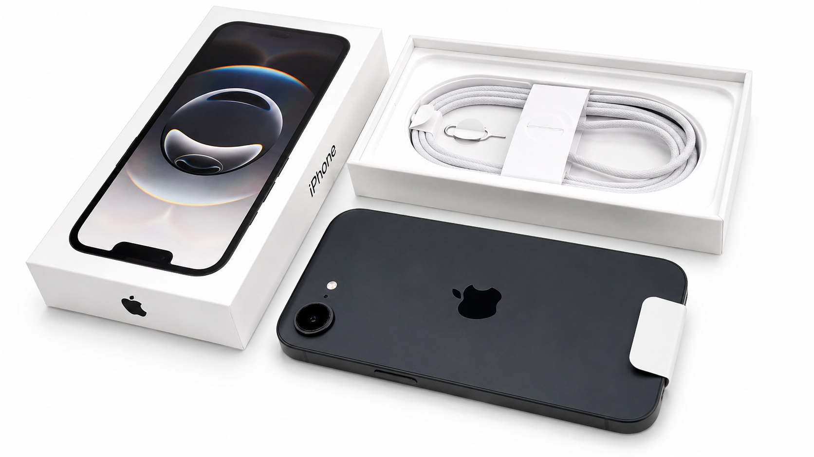
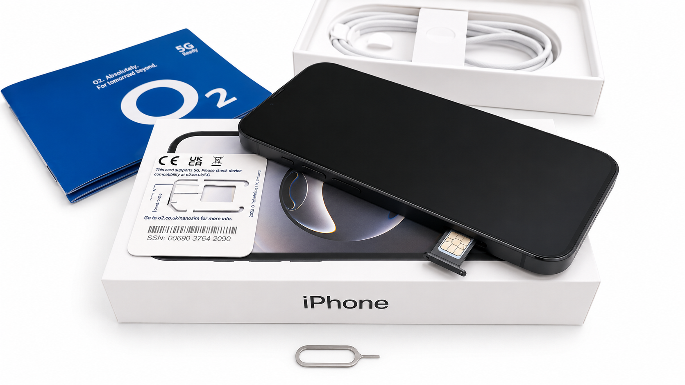
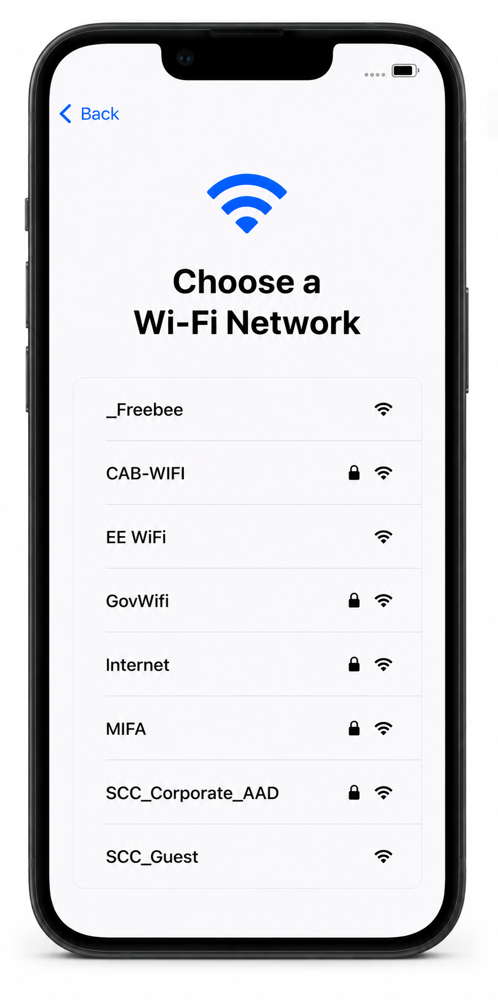
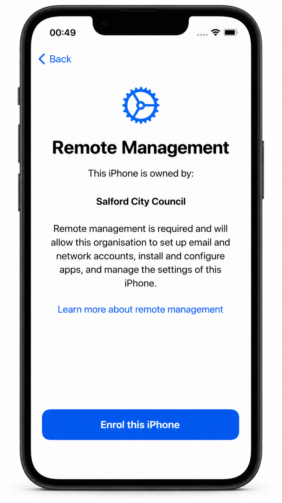
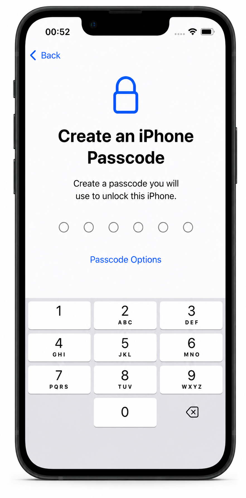
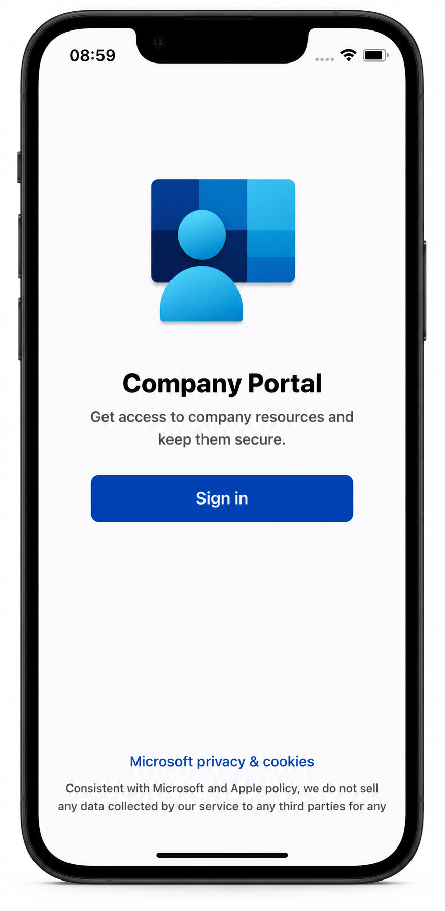
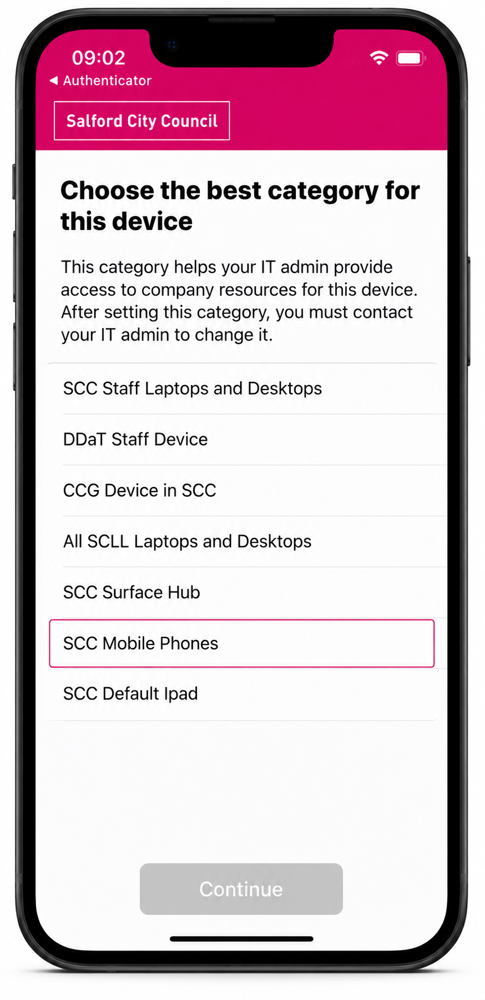
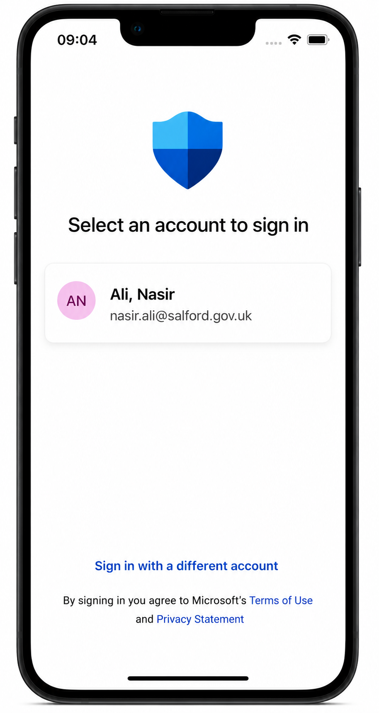
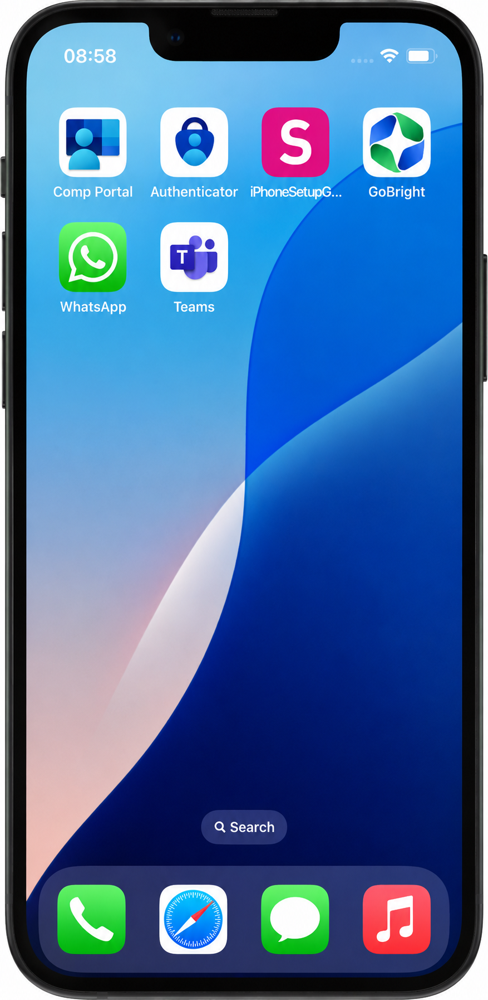

Step 1
Check What’s in the Box
Your iPhone box should include the iPhone, USB-C charging cable and SIM tray tool.

Salford City Council IT Services
Set up your SCC managed iPhone and complete enrolment correctly.
Unbox the iPhone, insert the SIM card and connect to Wi-Fi.
Complete Remote Management and sign in with your SCC account.
Finish Company Portal, device category and Microsoft Defender setup.
Keep the iPhone powered on and connected to Wi-Fi throughout setup.
Do not sign in with a personal Apple ID or iTunes account.
Your iPhone box should include the iPhone, USB-C charging cable and SIM tray tool.

Before powering on the iPhone, insert the SIM card.


When prompted, enrol the iPhone using Remote Management.


Open the Company Portal app and sign in using your work email address and password.



Your SCC iPhone is now ready to use.
The device will receive regular system and security updates from Apple. Please install updates when prompted to keep the device secure and compliant.

Submit a Rubix request using the correct mobile device request form.
This ensures the request includes the required cost code and approval details.
Log a Rubix request including the app name, store link, cost, and business justification. The request will be reviewed before approval.
Outlook, Teams, Company Portal, GoBright, Authenticator, Microsoft Defender and WhatsApp are included. Additional apps depend on your role.
No. SCC mobile devices are provided for work use and must comply with council policy.
No. Personal Apple IDs and iTunes accounts must not be used on council-issued devices.
Important: SCC iPhones do not support personal Apple IDs or iCloud. Use a .vcf contact file instead.
.vcf file..vcf file.Open the Company Portal app and check that your device is listed with a compliant status or green check mark.
It may take a few minutes for apps to install after setup. Stay connected to Wi-Fi or mobile data and keep the phone unlocked. If the issue continues, log a Rubix ticket.
Restart your phone, check Wi-Fi is connected, and try again. If the issue continues, log a Rubix ticket.
IT cannot recover or bypass your passcode. The device may need to be factory reset, which will erase all data and settings.
Important: All files and data will be permanently erased.
Go to Settings > General > Transfer or Reset iPhone > Erase All Content and Settings.
Go to Settings > General > About. The serial number is shown on this screen.
Log a Rubix ticket immediately. If stolen, include a police report reference. IT may attempt a remote wipe, terminate the SIM and arrange a replacement if required.
Your device must be returned to IT. Council data will be wiped and the device reset before reissue.
If you experience issues setting up or using an SCC managed device, please log an IT Support ticket or call 0161 793 3993.
Return to the SCC Device Portal to access other setup and support guides.